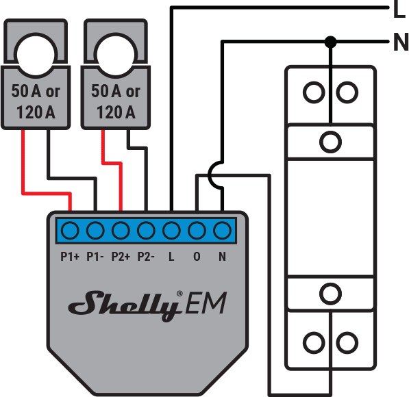
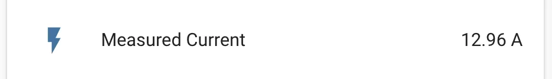

Guide · Energy
The best home energy monitor for Home Assistant
A home energy monitor sits where your power comes in and turns the whole house's electrical flow into numbers a computer can read: watts right now, kilowatt-hours over the day. Used with Home Assistant, it feeds the built-in Energy dashboard, which tracks what you consume, what your solar produces and what your battery stores. For most Home Assistant homes, the best choice is the monitor that fits your panel and speaks to Home Assistant locally — which is a different answer for every panel. This guide walks through the four honest ways to get whole-home numbers into Home Assistant: Sense, Emporia, Shelly EM and a DIY ESPHome build.
Start with the Energy dashboard, not the gadget
Home Assistant's Energy dashboard is built in and vendor-neutral. It works with electricity plus gas and water, and it takes readings from any integrated energy monitor, smart plug, solar inverter or utility meter. Sources are grouped into consumed, produced and stored energy, and you set it up under Settings, then Dashboards, then Energy, adding one source at a time. Home Assistant's Energy documentation describes the full setup.
One mechanical detail matters before you buy anything: the dashboard wants kilowatt-hours, but many monitors report instantaneous watts. A power sensor needs the Riemann sum integral integration to become an energy sensor, and its power input must carry state_class: measurement. If the monitor you pick reports watts only, this is the step that converts them.
Sense: the app-first choice, with a cloud in the middle
Sense is the best-known name in consumer energy monitoring, built around device-level disaggregation in its mobile app — its site pitches lower electricity bills and a carbon-footprint view. For Home Assistant, what matters is the official Sense integration, which pulls a Sense meter's data into Home Assistant. Setup runs through Home Assistant's Add Integration flow with a login to a Sense account; the meter is auto-discovered.
Per the integration documentation, Sense updates power readings every 60 seconds and energy trends every 5 minutes. You get active usage and production power in watts, plus daily, weekly, monthly and yearly trend sensors in kWh — including To Grid, From Grid, Net Production, Net Production % and Solar Powered %, and binary sensors for each device Sense detects.
The gotcha, stated plainly on the same integration page: data flows through Sense's cloud. Home Assistant logs into a Sense account, and no local API is documented. If your network or your principles rule out a mandatory cloud hop, Sense is out. If you want its device-detection app experience alongside Home Assistant, it works. Check Sense energy monitor price and stock on Amazon.
Emporia: the broad kit, same cloud gate
Emporia makes the widest lineup in this group. Per its site, the current products include the Vue Energy Monitor, the Vue Utility Connect (wireless monitoring offered in select utility service areas), smart plugs with energy monitoring and a Home Battery. Platform features include Excess Solar Management, Smart Scheduling and Peak Demand Management.
The gotcha mirrors Sense's: Emporia is a mobile-app-centric platform, and data goes through Emporia's cloud, with support via the app or chat. There is a community-side Emporia integration path, but the vendor's own pitch is app-first. Choose Emporia if you want a single vendor's whole kit — monitor, plugs, battery, all in one app — and you accept the cloud. Note that some deep product URLs on the Emporia site currently 404, so verify links at buy time. Check Emporia Vue on Amazon for the current configuration that fits your panel.
Shelly EM: the local-API middle path
The Shelly EM is the compact option for a consumer-unit install. Shelly's knowledge base documents the wiring, including a Gen1 diagram (credited below), and the unit takes two CT channels. In a single unit it can watch the main incoming feed and one more circuit, or two circuits of your choosing.
Why it's the middle path: Shelly devices expose a documented local API, and Home Assistant has a built-in Shelly integration — read our full Shelly and Home Assistant guide for what that buys you. That makes the Shelly EM the smallest ready-made monitor that keeps readings inside your network instead of routing through a vendor's cloud like the Sense and Emporia platforms do. Check Shelly EM on Amazon.

ESPHome: build it, own it, zero cloud
For the fully local path, build the monitor yourself with an ESP32 board and a current transformer (CT) clamp — the donut that snaps around a conductor and reports current without cutting anything. ESPHome's CT Clamp Current Sensor component converts the clamp's output into watts using calibration, and the sensor appears in Home Assistant as a native ESPHome sensor. From there, the Riemann sum step above turns watts into kWh for the Energy dashboard.
You are not limited to analog clamps. ESPHome also has components for dedicated power-metering chips: the ATM90E32, ATM90E26, BL0940/BL0942, CS5460A, CSE7766 and HLW8012, plus support for the OpenEnergyMonitor EmonTx. Several commercial energy-monitoring boards are built around these same chips, so a DIY board can be as capable as a box you buy. Everything runs entirely on your network; no account exists at all. Cost is a board, a clamp and calibration time rather than a retail price, and we don't quote prices we can't verify — check current parts on your usual supplier. CT clamps on Amazon are the usual starting point.

New to ESPHome itself? Our ESPHome section covers the tooling, and our write-up of the ESPHome starter kit walks a first build end to end.
Picking by situation
- You already have Sense or Emporia hardware. Use the official Sense integration, or the vendor's cloud app for Emporia, and feed the Energy dashboard from it. Just know the data path runs through their cloud.
- You want local readings with no DIY. The Shelly EM with Home Assistant's built-in Shelly integration is the shortest route to a consumer-unit monitor that answers to your network.
- You want zero dependencies and don't mind a wiring project. An ESPHome CT-clamp or metering-chip build is the only option in this list with no vendor cloud anywhere in the chain.
- You have solar. Any of the above that reports production feeds the Energy dashboard's Sources; Sense's integration even exposes To Grid, From Grid and Net Production sensors directly.
Gotchas we'd flag before you order
Cloud paths are structural, not optional extras. Home Assistant's own integration documentation for Sense states the data flows through Sense's cloud with no local API documented; Emporia's platform is mobile-app-centric per its site. If your Energy dashboard should keep working when the internet is down, that constraint picks the hardware for you — Shelly or ESPHome.
Watts are not kilowatt-hours. Plan for the Riemann sum integral step from day one; a monitor that reports watts only still works, it just needs the conversion sensor configured before the dashboard shows totals.
Clamp work means panel work. The Shelly EM installs in the consumer unit per Shelly's documented wiring diagram. CT clamps clip around conductors without cutting, but panel access is still live-panel territory — follow your local electrical rules.
Vendor web pages shift. Sense's product page currently redirects and 404s at some old URLs — content lives on sense.com — and several Emporia deep URLs return 404. Verify links when you buy, not just when you read a guide.
FAQ
Is Sense or Emporia the better home energy monitor?
Both feed the Home Assistant Energy dashboard, but both route data through their maker's cloud. Sense leans on device-level disaggregation in its app per sense.com; Emporia ships a full lineup of energy monitors, smart plugs and a home battery. If you want local control, neither of them is the answer — a Shelly EM or an ESPHome build is.
Which whole home energy monitors work locally with Home Assistant (no cloud)?
Shelly devices expose a local API and are supported by Home Assistant's built-in Shelly integration. A DIY ESPHome build with a CT clamp or a metering chip such as the ATM90E32 is fully local, feeding Home Assistant as native ESPHome sensors.
Does the Shelly EM work with Home Assistant without a cloud account?
Yes. Shelly publishes a documented local API, and Home Assistant's built-in Shelly integration supports Shelly devices. The Shelly EM has two CT channels, so it can watch the main load and one circuit or a pair from the same unit.
Can I build my own energy monitor with ESPHome and CT clamps?
Yes. ESPHome's CT Clamp Current Sensor component converts a clamp's output into watts using calibration, and ESPHome also supports dedicated power-metering chips (ATM90E32, ATM90E26, BL0940/BL0942, CS5460A, CSE7766, HLW8012) and OpenEnergyMonitor EmonTx. Everything runs locally and appears in Home Assistant as native sensors.
How do I net out solar production in the HA Energy dashboard?
The Home Assistant Energy dashboard groups sources into consumed, produced and stored energy and works with any integrated monitor, smart plug, inverter or utility meter. Add your production sensor under Sources alongside your grid consumption, and the dashboard handles the netting.
Do I need a Riemann sum sensor if my monitor only reports watts?
Yes. Instantaneous power sensors in watts or kilowatts are not energy sensors until you pass them through the Riemann sum integral integration. The power input must have state_class: measurement for Home Assistant to use it.
- Primary sources
- Home Assistant Energy integration; Home Assistant Sense integration; Emporia Energy; Shelly EM knowledge base; ESPHome CT Clamp component; sense.com
As an Amazon Associate, HA News earns from qualifying purchases.